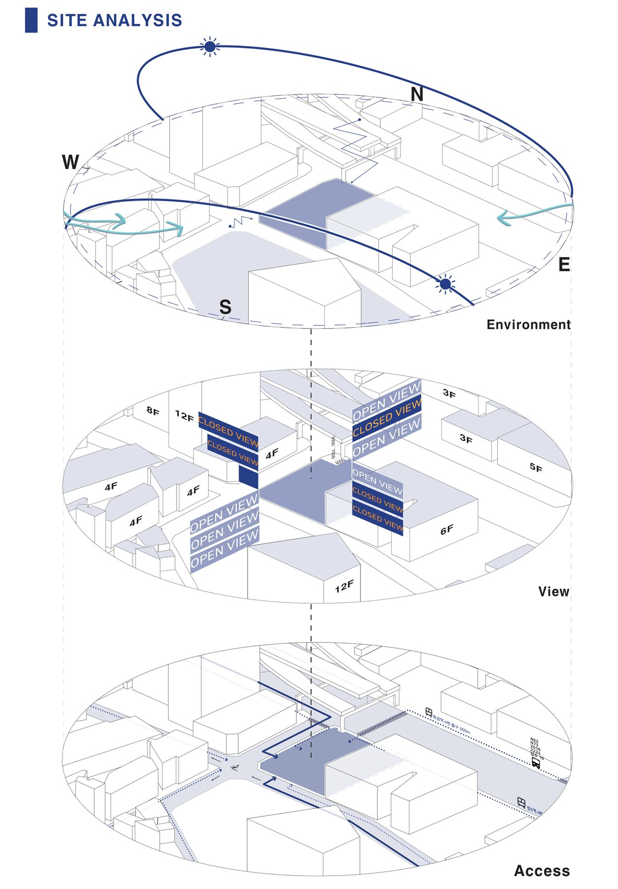
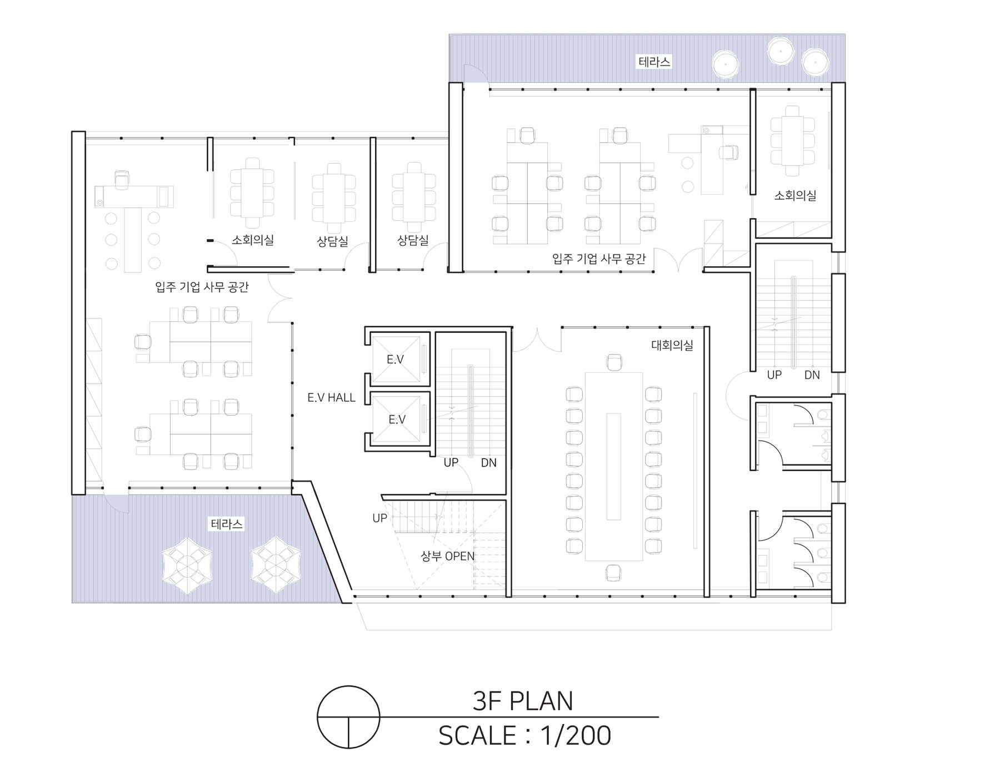
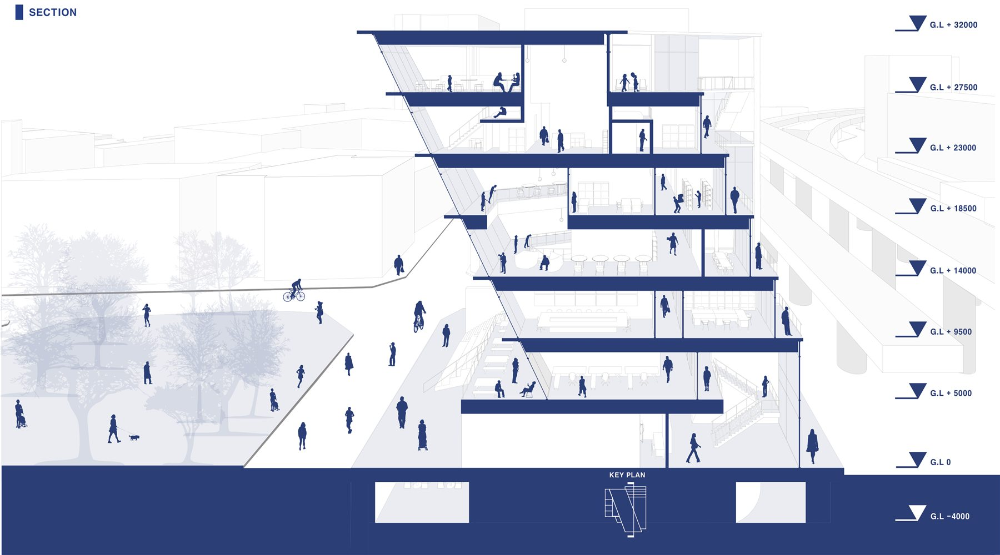
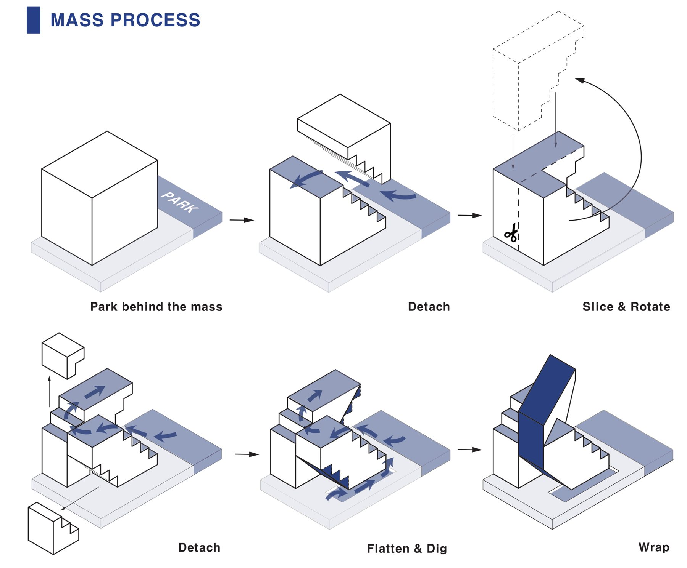
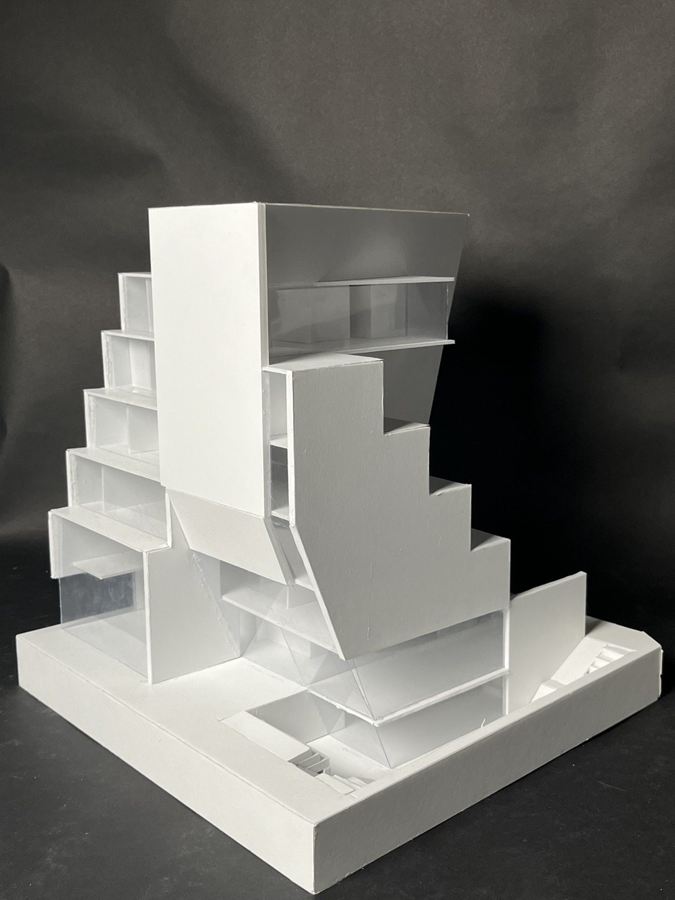

Overview
A seven-level mixed-use building for leather craft in Seongsu-dong, Seoul, designed in a fall 2024 studio. It puts a shop, workshops, teaching rooms, offices and an artist residency around one core.
- Course
- Architectural Design II, Studio B, University of Seoul, 2024
- Site
- Seongsu-dong, Seongdong-gu, Seoul, between an elevated railway to the north and a park to the south
- Access
- 200 m from Seongsu station exit 4, 300 m from Ttukseom station exit 4
- Storeys
- 1F to 6F, roof terrace, one basement at G.L -4000
Problem define
Seongsu was a shoemaking centre, but falling demand is shrinking the trade. Structural unemployment follows, and the craftsmen's know-how on handling leather is lost with them.
The cause above is the author's own text, with no source cited.

Solution
A building where craftsmen keep working, teach, and sell, moving the skill from shoes to other leather goods. The mass steps down toward the southern park and answers railway noise to the north.
| Value with unit | What it measures (10 words or fewer) |
|---|---|
| 6 floors + roof terrace + 1 basement | Storeys above and below ground |
| G.L +32,000 mm | Highest level marked on the section |
| 28,500 mm | Plan width, 3F to 6F |
Programme by floor, from the final panel's programme diagram: 1F shop space (commerce), sunken court and parking ramp; 2F leather workshop, exhibition, terrace; 3F tenant offices and conference rooms; 4F seminar room, education space and community lounge; 5F offices and exhibition; 6F artist residency and rest area; roof terrace with cafeteria.


Process
- Reading. Visited Seongsu and photographed street fronts (photo files dated 4 September 2024), then made a facade collage and a short city-reading video.
- Precedent. Studied SongEun Art Space by Herzog & de Meuron (2021, Gangnam-gu) and built 1:10 detail models of it; not the author's design.
- Programme. The 4 October draft ran B1 to 8F with a rooftop bar; after critique the basement store became stock storage; later the floors were cut to six.
- Mass. Six mass steps, from "park behind the mass" to "wrap"; balconies were dropped for structure. Six panel versions (3 to 9 December), a 1:100 model and a 1:10 wall model.
3_본설계/패널,


Lesson
The programme rests on desk research and the critique, not on talks with craftsmen.
They do not say who would run the hub, who pays rent, or how many craftsmen it would house. From the author's notes of the 4 October critique (translated from Korean): "It is not a building that houses a factory." "Narrow the topic further than 'leather'."